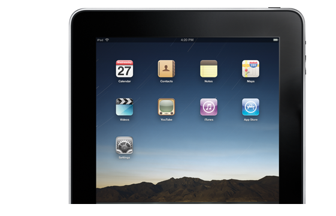

At Shiny we develop a range of innovative applications for the Mac, iPhone and iPad. Ranging from the educational to social networking, speech synthesis to the games, we strive to produce innovative software and have some fun in the process.
Here are some examples of recent apps we've produced.

Balloons! is the great fun app that enables you to release virtual helium balloons into the sky and track their progress around the world.
View the messages and photos left by others who catch your balloon as it travels on it's journey.
“With over 100,000 apps in the app store, it's getting harder and harder to find something new; most apps seem to be 'me too' versions of something else. Balloons! for iPhone, is something I haven't seen before, and it's really very clever.”
A tool for Mac OS X which creates podcasts from Wikipedia articles. CHOOSE YOUR ARTICLE using the familiar wikipedia interface. SPEAK IT! Speakapedia™ will convert your article to speech. LISTEN to your article in iTunes or on your iPod or iPhone.
The family favourite game gets some digital assistance with Charades for iPhone. Instead of struggling to think of a film, book or song simply push the lever and the curtain is raised on a fresh Charades challenge! Pass the phone around to each player and act it out for all to see.
The Random Activity Generator is an iPhone application for the education sector. You give the iPhone a shake, the cards spin and you are given a random activity to do. Over 50,000 combinations ensure that each time the cards spin a new and fun challenge will be generated.
“A brilliant tool that injects spice into planning learning and teaching. My kids loved afternoons using the RAG why isn't it in every teachers toolkit?”